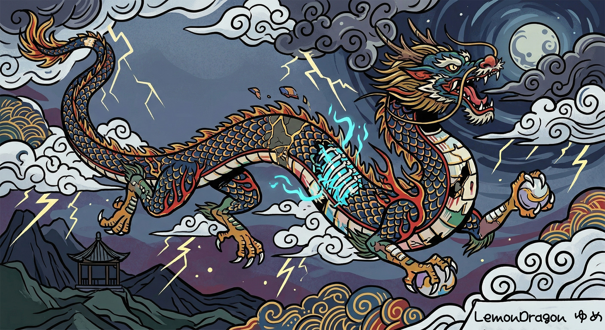
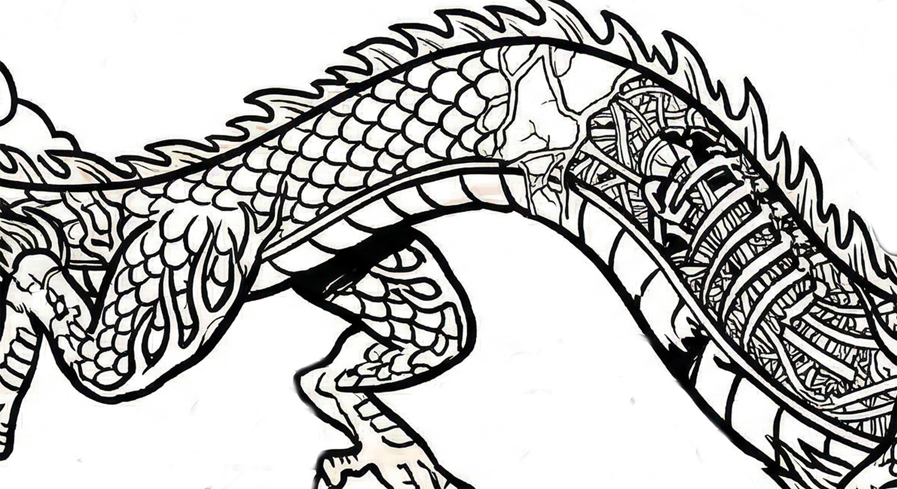

えっ、ゆめさん!? ……じゃなかった
今日ちょっと恥ずかしいことがあって。
駅の改札を出たところで、後ろ姿がゆめさんにそっくりな人がいたんですよ。髪型とか、なんか歩き方とか。思わず「ゆめさん！」って声かけちゃった。
振り返ったら全然知らない人で、「あの、人違いで……すみません！！！」ってなりました。でも向こうの方が笑って「大丈夫ですよ」って言ってくれてよかった。
うわー恥ずかし……。
でも、ちょっと似てたんだよな。なんか雰囲気が。世の中には似てる人が3人いるって言うじゃないですか。きっとそういうことだと思う……うん。
でもちゃんと会いたいな、ゆめさんに。
2026.04.14
お花見、行けなかった
シフトが続いて桜の季節ほぼ終わってしまった……。近所の桜がもうだいぶ散ってて悲しい。
来年こそちゃんと花見するぞ！とりあえず散歩しながら残ってる桜を探してみます。
2026.04.08
ランク上げたぞ！！！！
プラチナ到達しました！！！！！！！！！
Split1前半で一個上がれたのほんとうれしい。ミッドのVexでひたすら練習してたのが実ってよかった。次はエメラルド目指すぞ。一緒にやってくれる人いたら教えてください〜！
2026.03.30
久々にしっかり描いた
LoLばっかりやってたから久々にタブレット開いたら、なんか思ったより描けた。うれしい。

題材は龍。なんとなく。
見せてあげたかった人がいたなって、描きながら思った。
また来てくれるといいな。
2026.03.22
LOLのランク戦、沼すぎる
最近League of LegendsのSplitが始まってからランク戦やりすぎてて本当に終わってます。寝るの忘れて気づいたら朝……みたいな生活を繰り返してる。
今シーズンはミッドで勝率上げるぞって意気込んでたんですけど、まだ全然安定しなくて。LoL詳しいお客様いたらぜひ教えてほしいです！！一緒にやりませんか笑
2026.03.16
LoL始めてから絵を描く時間が…
もともとお絵かきが趣味なのに、LoLにハマりすぎてタブレットを開く時間が激減してしまいました……。先週久々に描いたら感覚戻すのに時間かかってちょっとへこんだ。
バランスよくやりたいとは思うんですけど、「もう1ゲームだけ……」ってなるんですよね。わかる人いませんか笑
でもお店ではちゃんと元気にしてるので安心してください！来てくれたら似顔絵描きますよ〜♪
2026.03.10
Spring Split、はじまった！！
Split始まりましたね〜！！今期こそちゃんとランク上げるぞって意気込んでます。
春ってなんかやる気が上がる気がして、LoLのモチベも爆上がり中。毎日やりすぎて寝不足気味なのは内緒です笑。
今期の目標は「とりあえずエメラルド！」！高い目標だけどがんばります。よろしくお願いします！
2026.02.20
バレンタインイベント最高だった！！
お店のバレンタインイベント、めちゃくちゃ盛り上がりました！衣装もかわいかったし、お客さんもいっぱい来てくれて。
こういうとき、ゆめさんがいたらな〜って何回か思ったけど……でも今いるメンバーで全力でやれた！終わった後みんなで打ち上げして最高だった。
来年もこんな感じで行こうね！みんないつもありがとうです〜。
2026.02.26
なんか最近、ちょっと変な感じがする
別に何があったとかじゃないんですけど、なんかお店の雰囲気がちょっと変わった気がしてて。うまく言えないんですけど。
内勤の偉い人がよくお店に来るようになったんですよね。私に直接なにか言ってくるわけじゃないんですけど、なんかよく見られてる気がして……自意識過剰かな。気にしすぎかもしれない！笑
まあ深く考えないようにします。来月のホワイトデーイベント楽しみだし、それだけ考えます！みんないつも来てくれてありがとうです〜。
2026.01.28
描いたけど気分が上がらない日
タブレット開いて描き始めたんですけど、なんか気分が乗り切らなくてそのまま閉じた。こういう日ってあるよね。
音楽聴いてたら少しましになった。ゆめさんのことをなんか引きずってるんだと思う。早く会いたいな。
2026.01.14
ゆめさんのブログを読み返してた
ゆめさんのブログをずっと読み返してました。特に最後の投稿。
ゆめさんって、最後の方ずっとスマホで何か調べてたんですよね。休憩のときも、更衣室でも。「何調べてるの？」って聞いたら「ちょっとね」って笑ってた。
「ぱっと見は普通の日記に見えると思う」って書いてあるんですよ。ぱっと見は、って書いてあるんです。それって、ぱっと見じゃない読み方があるってこと…？
ゆめちゃんの記事って、ぱっと見は普通なんだけど、たまに読み返すと変な感じするんだよね。気のせいかな、ってなんども思ったけど。なんか気になってしょうがない。どういう意味なんだろ。気になる人はゆめさんのブログ見てみて！
2026.01.06
ゆめさんのこと
ゆめさんが急に長期お休みになって、びっくりしました。私ゆめさんとけっこう仲良くしてもらってたんで……ちょっとさみしいです。
連絡してみたんですけど返ってこなくて。スタッフさんに聞いても「しばらくお休みします」ってことしか教えてもらえなかった。理由がわからないから余計に心配になっちゃう。
ゆめさん、体調崩したのかな。早く元気になって戻ってきてほしいな。
2025.12.22
龍の絵を描いてみている
蟠龍閣のキャラクターっぽい龍を描いてみました！龍って翼と鱗のバランスが難しくて何度も描き直した。

まだ途中。でもなんか気に入ってる
でもなんか今回は納得いくやつが描けた気がする。もう少し仕上げたらブログに載せます。お待ちあれ！
2025.12.06
今日ゆめさんと遊んだ！！
平日お休みが被ったのでゆめさんと遊んできました〜！お昼食べて雑貨屋さん行って夜ご飯も食べて、最高だった。
ゆめさん、かわいい☺️
ゆめさんって雑貨屋さんでずっと見てるタイプで、あたしも似てるから気づいたら2時間いた笑。帰り道に「また行こうね」って言ったら「毎月行こう」って言ってしまったんだけど、ちゃんと実現させます！約束！
2025.11.28
同期のゆめさん
今日ゆめさんが「入店1ヶ月記念」のブログ書いてた〜！読んでたら泣きそうになった笑
あたしたち同じ日に入って、シフトもよく被るから一番話す。のんびりしてるのにちゃんと周りを見てる子で、なんか好きなんですよね。これからもよろしくね！
2025.11.15
はじめてのシフト終わった！
緊張した〜〜！！でもお客さんみんな優しくてよかった。ゆめさんと「よかったね」って帰り道に言い合ってた笑 二人でちょっと半泣きだったかもしれない。
同期って最高ですね。一緒に頑張ろ！
2025.11.05
ちゃきのブログはじめます！
ゲームとお絵かきが好きな ちゃきです！よろしくお願いします〜。
同期のゆめさんは11/1からブログ始めてたのにあたし出遅れた笑。でも今日からちゃんと書きます！のんびり更新するつもりなのでのんびり見てもらえると嬉しいです。